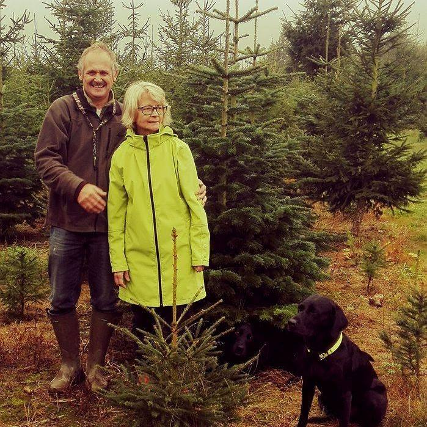

Velkommen!

Hos Solvang Juletræer er vi fast leverandør af det vigtigste til juleaften.
Kom og fæld jeres juletræ med familien.
Vi sælger eller hjælper også gerne med juletræsfoden, pynte-gran (også til æresporten) og meget mere.
Find os på Solvang 7, 4800 Falster.
Åbningstid: Lørdag d. 20. & Søndag d.21.december kl. 10:00 – 16:00
Ring til os: 28 45 98 44 Find vej på Google Maps